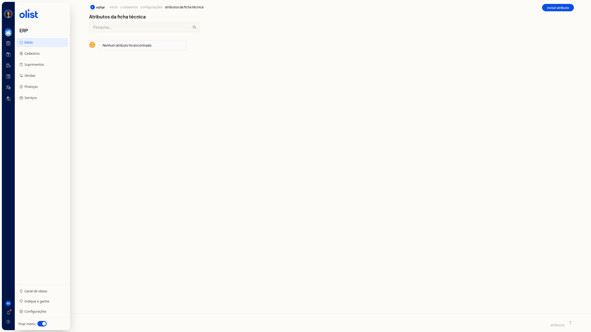
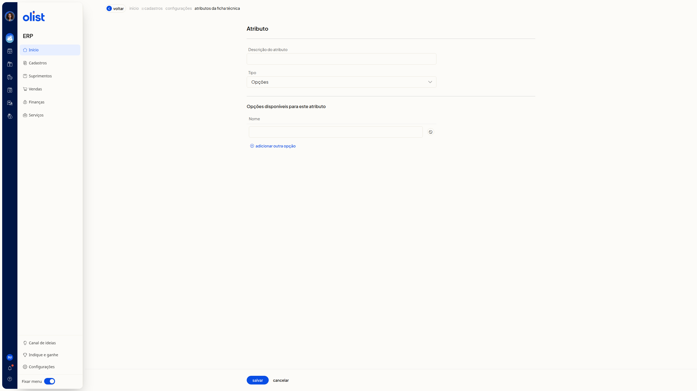

Atributos dos Produtos - Configurações
No ERP da Olist, a tela Atributos da ficha técnica lista os atributos da ficha técnica. Você pesquisa na lista e abre a inclusão de um atributo para informar a descrição e o tipo.
Como acessar
Acesse início > cadastros > configurações > atributos da ficha técnica.
Pré-requisitos
- Autenticação no ERP: você precisa estar autenticado no ERP.
- Página Atributos da ficha técnica: a consulta e a inclusão são feitas nesta página.
Grupos de configuração
Atributos da ficha técnica
A lista reúne os atributos da ficha técnica.
- Quando não há atributos, a lista exibe Nenhum atributo foi encontrado.
- Pesquisa... não é obrigatório e busca na lista. Exemplo: embalagem.
- Incluir atributo abre o formulário Atributo.
- voltar retorna.

Atributo
O formulário Atributo reúne a descrição, o tipo, salvar e cancelar.
- Descrição do atributo não é obrigatório. Exemplo: Cor da embalagem.
- Tipo não é obrigatório. As opções são Texto, Valor, Opções e Checkbox (Sim/Não).
Em Texto, Valor e Checkbox (Sim/Não), permanecem apenas Descrição do atributo e Tipo. Em Opções, aparece a seção Opções disponíveis para este atributo. A descrição já digitada permanece ao trocar o Tipo.

Opções disponíveis para este atributo
A seção aparece quando o Tipo é Opções. Nela, você informa o nome das opções disponíveis.
- Nome não é obrigatório. Exemplo: Azul.
- A seção também traz Remover e adicionar outra opção.
Links relacionados
Se precisar de ajuda com esta configuração, fale com o suporte.